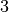
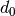
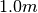
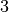
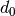
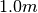

|
A Discrete-Event Network Simulator
|
Models |
|
|
A Discrete-Event Network Simulator
|
Models |
ns-3 nodes can contain a collection of NetDevice objects, much like an actual computer contains separate interface cards for Ethernet, Wifi, Bluetooth, etc. This chapter describes the ns-3 WifiNetDevice and related models. By adding WifiNetDevice objects to ns-3 nodes, one can create models of 802.11-based infrastructure and ad hoc networks.
The WifiNetDevice models a wireless network interface controller based on the IEEE 802.11 standard [ieee80211]. We will go into more detail below but in brief, ns-3 provides models for these aspects of 802.11:
The set of 802.11 models provided in ns-3 attempts to provide an accurate MAC-level implementation of the 802.11 specification and to provide a not-so-slow PHY-level model of the 802.11a specification.
The implementation is modular and provides roughly four levels of models:
There are presently three MAC high models that provide for the three (non-mesh; the mesh equivalent, which is a sibling of these with common parent ns3::RegularWifiMac, is not discussed here) Wi-Fi topological elements - Access Point (AP) (implemented in class ns3::ApWifiMac, non-AP Station (STA) (ns3::StaWifiMac), and STA in an Independent Basic Service Set (IBSS - also commonly referred to as an ad hoc network (ns3::AdhocWifiMac).
The simplest of these is ns3::AdhocWifiMac, which implements a Wi-Fi MAC that does not perform any kind of beacon generation, probing, or association. The ns3::StaWifiMac class implements an active probing and association state machine that handles automatic re-association whenever too many beacons are missed. Finally, ns3::ApWifiMac implements an AP that generates periodic beacons, and that accepts every attempt to associate.
These three MAC high models share a common parent in ns3::RegularWifiMac, which exposes, among other MAC configuration, an attribute QosSupported that allows configuration of 802.11e/WMM-style QoS support. With QoS-enabled MAC models it is possible to work with traffic belonging to four different Access Categories (ACs): AC_VO for voice traffic, AC_VI for video traffic, AC_BE for best-effort traffic and AC_BK for background traffic. In order for the MAC to determine the appropriate AC for an MSDU, packets forwarded down to these MAC layers should be marked using ns3::QosTag in order to set a TID (traffic id) for that packet otherwise it will be considered belonging to AC_BE.
The MAC low layer is split into three components:
There are also several rate control algorithms that can be used by the Mac low layer:
The PHY layer implements a single model in the ns3::WifiPhy class: the physical layer model implemented there is described fully in a paper entitled Yet Another Network Simulator Validation results for 802.11b are available in this technical report
In ns-3, nodes can have multiple WifiNetDevices on separate channels, and the WifiNetDevice can coexist with other device types; this removes an architectural limitation found in ns-2. Presently, however, there is no model for cross-channel interference or coupling.
The source code for the Wifi NetDevice lives in the directory src/wifi.
Wifi NetDevice architecture.
The modularity provided by the implementation makes low-level configuration of the WifiNetDevice powerful but complex. For this reason, we provide some helper classes to perform common operations in a simple matter, and leverage the ns-3 attribute system to allow users to control the parametrization of the underlying models.
Users who use the low-level ns-3 API and who wish to add a WifiNetDevice to their node must create an instance of a WifiNetDevice, plus a number of constituent objects, and bind them together appropriately (the WifiNetDevice is very modular in this regard, for future extensibility). At the low-level API, this can be done with about 20 lines of code (see ns3::WifiHelper::Install, and ns3::YansWifiPhyHelper::Create). They also must create, at some point, a WifiChannel, which also contains a number of constituent objects (see ns3::YansWifiChannelHelper::Create).
However, a few helpers are available for users to add these devices and channels with only a few lines of code, if they are willing to use defaults, and the helpers provide additional API to allow the passing of attribute values to change default values. The scripts in src/examples can be browsed to see how this is done.
The YansWifiChannelHelper has an unusual name. Readers may wonder why it is named this way. The reference is to the yans simulator from which this model is taken. The helper can be used to create a WifiChannel with a default PropagationLoss and PropagationDelay model. Specifically, the default is a channel model with a propagation delay equal to a constant, the speed of light, and a propagation loss based on a log distance model with a reference loss of 46.6777 dB at reference distance of 1m.
Users will typically type code such as::
YansWifiChannelHelper wifiChannelHelper = YansWifiChannelHelper::Default ();
Ptr<WifiChannel> wifiChannel = wifiChannelHelper.Create ();
to get the defaults. Note the distinction above in creating a helper object vs. an actual simulation object. In ns-3, helper objects (used at the helper API only) are created on the stack (they could also be created with operator new and later deleted). However, the actual ns-3 objects typically inherit from class ns3::Object and are assigned to a smart pointer. See the chapter in the ns-3 manual for a discussion of the ns-3 object model, if you are not familiar with it.
Todo: Add notes about how to configure attributes with this helper API
Physical devices (base class ns3::Phy) connect to ns3::Channel models in ns-3. We need to create Phy objects appropriate for the YansWifiChannel; here the YansWifiPhyHelper will do the work.
The YansWifiPhyHelper class configures an object factory to create instances of a YansWifiPhy and adds some other objects to it, including possibly a supplemental ErrorRateModel and a pointer to a MobilityModel. The user code is typically::
YansWifiPhyHelper wifiPhyHelper = YansWifiPhyHelper::Default ();
wifiPhyHelper.SetChannel (wifiChannel);
Note that we haven’t actually created any WifiPhy objects yet; we’ve just prepared the YansWifiPhyHelper by telling it which channel it is connected to. The phy objects are created in the next step.
The ns3::NqosWifiMacHelper and ns3::QosWifiMacHelper configure an object factory to create instances of a ns3::WifiMac. They are used to configure MAC parameters like type of MAC.
The former, ns3::NqosWifiMacHelper, supports creation of MAC instances that do not have 802.11e/WMM-style QoS support enabled.
For example the following user code configures a non-QoS MAC that will be a non-AP STA in an infrastructure network where the AP has SSID ns-3-ssid::
NqosWifiMacHelper wifiMacHelper = NqosWifiMacHelper::Default ();
Ssid ssid = Ssid ("ns-3-ssid");
wifiMacHelper.SetType ("ns3::StaWifiMac",
"Ssid", SsidValue (ssid),
"ActiveProbing", BooleanValue (false));
To create MAC instances with QoS support enabled, ns3::QosWifiMacHelper is used in place of ns3::NqosWifiMacHelper. This object can be also used to set:
The following code shows an example use of ns3::QosWifiMacHelper to create an AP with QoS enabled, aggregation on AC_VO, and Block Ack on AC_BE::
QosWifiMacHelper wifiMacHelper = QosWifiMacHelper::Default ();
wifiMacHelper.SetType ("ns3::ApWifiMac",
"Ssid", SsidValue (ssid),
"BeaconGeneration", BooleanValue (true),
"BeaconInterval", TimeValue (Seconds (2.5)));
wifiMacHelper.SetMsduAggregatorForAc (AC_VO, "ns3::MsduStandardAggregator",
"MaxAmsduSize", UintegerValue (3839));
wifiMacHelper.SetBlockAckThresholdForAc (AC_BE, 10);
wifiMacHelper.SetBlockAckInactivityTimeoutForAc (AC_BE, 5);
We’re now ready to create WifiNetDevices. First, let’s create a WifiHelper with default settings::
WifiHelper wifiHelper = WifiHelper::Default ();
What does this do? It sets the RemoteStationManager to ns3::ArfWifiManager. Now, let’s use the wifiPhyHelper and wifiMacHelper created above to install WifiNetDevices on a set of nodes in a NodeContainer “c”::
NetDeviceContainer wifiContainer = WifiHelper::Install (wifiPhyHelper, wifiMacHelper, c);
This creates the WifiNetDevice which includes also a WifiRemoteStationManager, a WifiMac, and a WifiPhy (connected to the matching WifiChannel).
There are many ns-3 attributes that can be set on the above helpers to deviate from the default behavior; the example scripts show how to do some of this reconfiguration.
This is a typical example of how a user might configure an adhoc network.
To be completed
This is a typical example of how a user might configure an access point and a set of clients.
To be completed
The WifiChannel subclass can be used to connect together a set of ns3::WifiNetDevice network interfaces. The class ns3::WifiPhy is the object within the WifiNetDevice that receives bits from the channel. For the channel propagation modeling, the propagation module is used; see section Propagation for details.
This section summarizes the description of the BER calculations found in the yans paper taking into account the Forward Error Correction present in 802.11a and describes the algorithm we implemented to decide whether or not a packet can be successfully received. See “Yet Another Network Simulator” for more details.
The PHY layer can be in one of three states:
When the first bit of a new packet is received while the PHY is not IDLE (that is, it is already synchronized on the reception of another earlier packet or it is sending data itself), the received packet is dropped. Otherwise, if the PHY is IDLE, we calculate the received energy of the first bit of this new signal and compare it against our Energy Detection threshold (as defined by the Clear Channel Assessment function mode 1). If the energy of the packet k is higher, then the PHY moves to RX state and schedules an event when the last bit of the packet is expected to be received. Otherwise, the PHY stays in IDLE state and drops the packet.
The energy of the received signal is assumed to be zero outside of the reception
interval of packet k and is calculated from the transmission power with a
path-loss propagation model in the reception interval. where the path loss
exponent,  , is chosen equal to , the reference distance,
 is choosen equal to  and the reference energy is based
based on a Friis propagation model.
, is chosen equal to , the reference distance,
 is choosen equal to  and the reference energy is based
based on a Friis propagation model.
When the last bit of the packet upon which the PHY is synchronized is received, we need to calculate the probability that the packet is received with any error to decide whether or not the packet on which we were synchronized could be successfully received or not: a random number is drawn from a uniform distribution and is compared against the probability of error.
To evaluate the probability of error, we start from the piecewise linear functions shown in Figure SNIR function over time. and calculate the SNIR function.
SNIR function over time.
From the SNIR function we can derive the Bit Error Rate (BER) and Packet Error Rate (PER) for the modulation and coding scheme being used for the transmission. Please refer to [pei80211ofdm], [pei80211b] and [lacage2006yans] for a detailed description of the available BER/PER models.
The WifiChannel implementation uses the propagation loss and delay models provided within the ns-3 propagation module.
The 802.11 Distributed Coordination Function is used to calculate when to grant access to the transmission medium. While implementing the DCF would have been particularly easy if we had used a recurring timer that expired every slot, we chose to use the method described in [ji2004sslswn] where the backoff timer duration is lazily calculated whenever needed since it is claimed to have much better performance than the simpler recurring timer solution.
The higher-level MAC functions are implemented in a set of other C++ classes and deal with:
Should link to the list of attributes exported by Doxygen
Should link to the list of traces exported by Doxygen
| [ieee80211] | IEEE Std 802.11-2007 Wireless LAN Medium Access Control (MAC) and Physical Layer (PHY) Specifications |
| [pei80211b] | G. Pei and Tom Henderson, Validation of ns-3 802.11b PHY model |
| [pei80211ofdm] | G. Pei and Tom Henderson, Validation of OFDM error rate model in ns-3 |
| [lacage2006yans] | M. Lacage and T. Henderson, Yet another Network Simulator |
| [ji2004sslswn] | Z. Ji, J. Zhou, M. Takai and R. Bagrodia, Scalable simulation of large-scale wireless networks with bounded inaccuracies, in Proc. of the Seventh ACM Symposium on Modeling, Analysis and Simulation of Wireless and Mobile Systems, October 2004. |